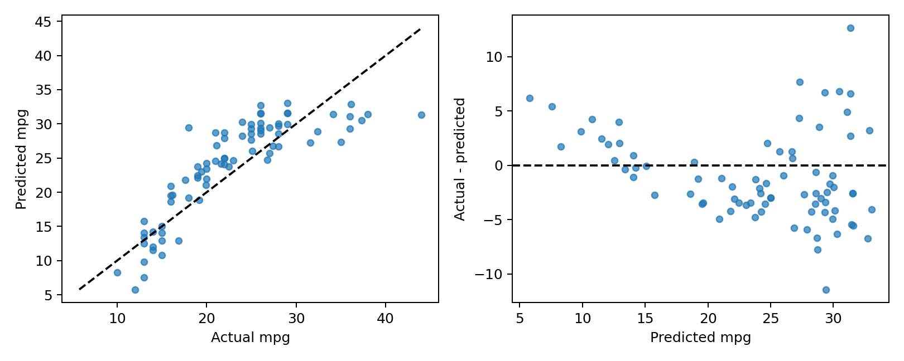

<!doctype html><html lang="zh-CN"><meta charset="utf-8"><meta name="viewport" content="width=device-width,initial-scale=1"><title>2.4-14</title><link rel="stylesheet" href="../../assets/style.css"><header><div><a href="../../auto-project.html">Auto项目目录</a><a href="../../index.html">全书代码目录</a></div></header><main><h1>代码 2.4-14 · 画最终测试诊断图</h1><p>按Notebook顺序运行。后续代码依赖前面定义的变量。真实数据来自教材官网。</p><button id="copy">复制整块代码</button><textarea id="code" readonly rows="15">fig, axes = plt.subplots(1, 2, figsize=(9, 3.6))
axes[0].scatter(y_test, final_pred, s=20, alpha=0.7)
limits = [min(y_test.min(), final_pred.min()),
          max(y_test.max(), final_pred.max())]
axes[0].plot(limits, limits, &quot;--&quot;, color=&quot;black&quot;)
axes[0].set(xlabel=&quot;Actual mpg&quot;, ylabel=&quot;Predicted mpg&quot;)
axes[1].scatter(final_pred, test_results[&quot;residual&quot;], s=20, alpha=0.7)
axes[1].axhline(0, color=&quot;black&quot;, linestyle=&quot;--&quot;)
axes[1].set(xlabel=&quot;Predicted mpg&quot;, ylabel=&quot;Actual - predicted&quot;)
fig.tight_layout()
fig.savefig(image_dir / &quot;240-test-diagnostics.pdf&quot;)
fig.savefig(image_dir / &quot;240-test-diagnostics.png&quot;, dpi=180)
display(fig)
plt.close(fig)
</textarea><p id="status" role="status"></p><p><a href="../../notebooks/ch02/2.4-auto-project.ipynb" download>下载已执行Notebook</a> · <a href="../../auto-project.html">返回项目目录</a></p></main><script src="../../assets/copy.js" defer></script></html>